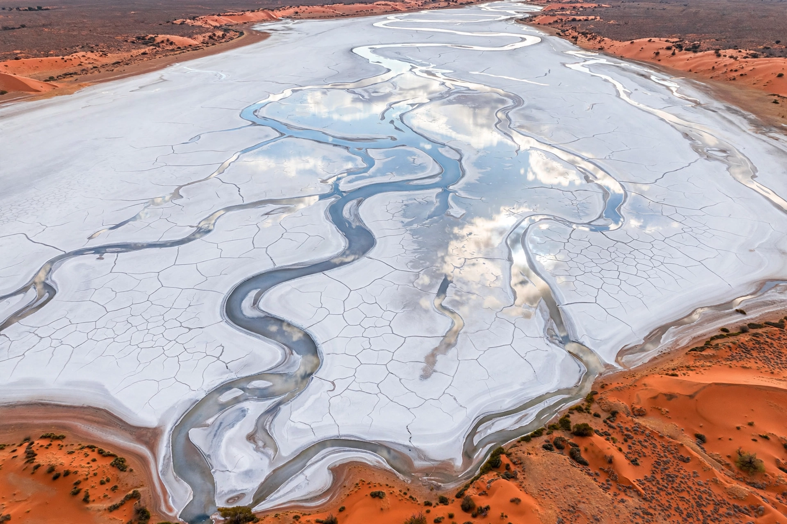

From Wikipedia, the free encyclopedia
| Lake Eyre basin | |
|---|---|
 | |
| Area | c. 1.2 million km² (about one-sixth of Australia) |
| States/territories | Queensland, South Australia, Northern Territory, New South Wales |
| Terminal point | Kati Thanda–Lake Eyre, 15 m below sea level |
| Major rivers | Georgina, Diamantina, Cooper Creek, Warburton |
| Type | Endorheic (internally drained) |
The Lake Eyre basin is a drainage basin that covers just under one-sixth of all of Australia. It is the largest endorheic river system in Australia and one of the largest internally drained systems in the world, covering roughly 1.2 million square kilometres of arid and semi-arid central Australia. Its rivers flow not to the sea but inland, toward Kati Thanda–Lake Eyre in northern South Australia, the lowest point on the continent at about 15 metres below sea level.
Rainfall in the basin is low, erratic, and strongly influenced by the monsoon in the northern headwaters and by El Niño–Southern Oscillation cycles. The great rivers of the Channel Country — the Georgina, the Diamantina, and Cooper Creek — rise in Queensland and spread into vast networks of braided channels and floodplains, losing water to evaporation and infiltration as they travel south-west. In exceptional flood years (such as 1974, 2009–2011, and 2019) water completes the journey and spreads across Lake Eyre's salt pan, transforming the desert: tens of thousands of pelicans and other waterbirds arrive to breed, fish populations boom in the flooded channels, and wildflowers carpet the surrounding country. Between floods the lake bed is a dazzling white salt flat, famously used for land-speed record attempts.
The basin's flood pulse supports one of the world's last unregulated wild river systems and remarkable desert ecology, including free-flowing rivers, the Coongie Lakes wetlands (Ramsar-listed), and artesian springs fed by the Great Artesian Basin, which underlies much of the region and sustains both unique spring ecosystems and the pastoral industry. Most land is used for extensive cattle grazing; mining and petroleum extraction occur around Moomba and in the Cooper Basin, and unconventional gas development has prompted ongoing debate about water protection. The Lake Eyre Basin Intergovernmental Agreement (2000) coordinates management between the Commonwealth and the basin states, and Aboriginal groups including the Arabana and Dieri hold native title over large areas around the lake.
Lake Eyre · Cooper Creek · Great Artesian Basin · Endorheic basin · Channel Country